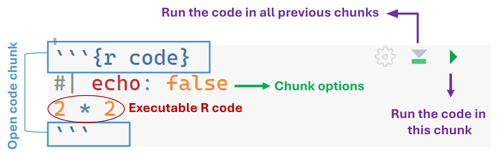
Content
::: {.column-margin}
I want this picture displayed in the margin

:::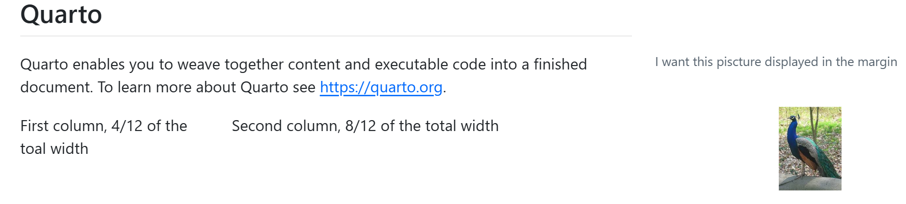
Open a new chunk code: shift + ctrl + i or
. . .
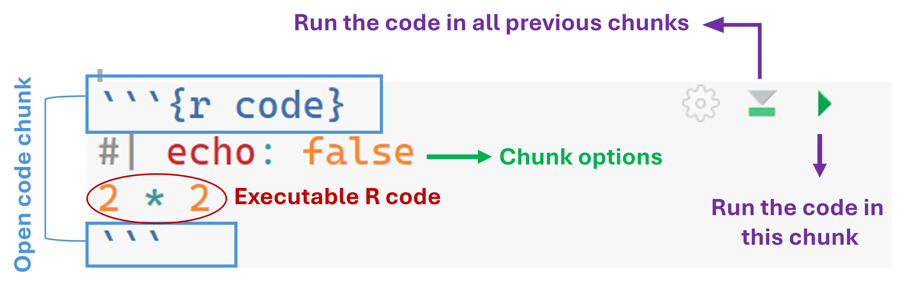
echo: Control the code displayCode executed & Shown
```{r}
#| echo: true
head(rock)
```head(rock) area peri shape perm
1 4990 2791.90 0.0903296 6.3
2 7002 3892.60 0.1486220 6.3
3 7558 3930.66 0.1833120 6.3
4 7352 3869.32 0.1170630 6.3
5 7943 3948.54 0.1224170 17.1
6 7979 4010.15 0.1670450 17.1Code executed & Not Shown
```{r}
#| echo: false
head(rock)
``` area peri shape perm
1 4990 2791.90 0.0903296 6.3
2 7002 3892.60 0.1486220 6.3
3 7558 3930.66 0.1833120 6.3
4 7352 3869.32 0.1170630 6.3
5 7943 3948.54 0.1224170 17.1
6 7979 4010.15 0.1670450 17.1. . .
Code executed & entire chunk shown
```{r}
#| echo: fenced
head(rock)
``` area peri shape perm
1 4990 2791.90 0.0903296 6.3
2 7002 3892.60 0.1486220 6.3
3 7558 3930.66 0.1833120 6.3
4 7352 3869.32 0.1170630 6.3
5 7943 3948.54 0.1224170 17.1
6 7979 4010.15 0.1670450 17.1eval & include: Control the execution of the codeThe code is not executed (but it is shown)
```{r}
#| echo: true
#| eval: false
head(rock)
```head(rock). . .
The code is executed, neither the code nor the results are show
```{r}
#| include: false
head(rock)
```include: false
Super convient as first code chunk to load all the packages, data, preprocessing
warning: true
(default) the warnings obtained from the code executed in the chunk are displayed
message: true
(default) the messages associated to the code (e.g., when you upload a package with library(package))
error
error: false
(default) If there is an error in the code, knitting stops and the document will not be generated until the error is fixed
error: true
If there is an error in the code, the error message is shown in the document and the knitting goes on
Defined in the YAML, they are applied to all code chunks unless otherwise specified:
[...]
execute:
echo: fenced
message: true
error: true. . .
Overruled by specific code-chunk options:
```{r}
#| echo: false
head(rock)
``` area peri shape perm
1 4990 2791.90 0.0903296 6.3
2 7002 3892.60 0.1486220 6.3
3 7558 3930.66 0.1833120 6.3
4 7352 3869.32 0.1170630 6.3
5 7943 3948.54 0.1224170 17.1
6 7979 4010.15 0.1670450 17.1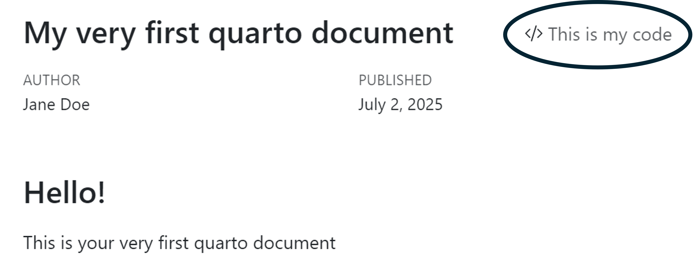
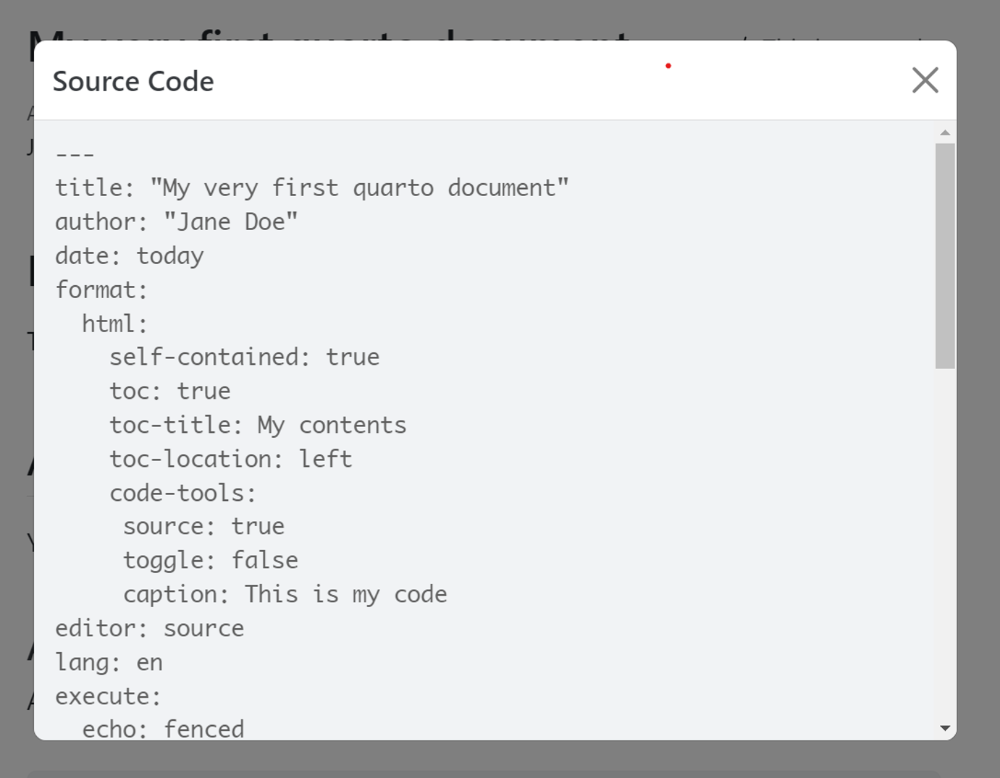
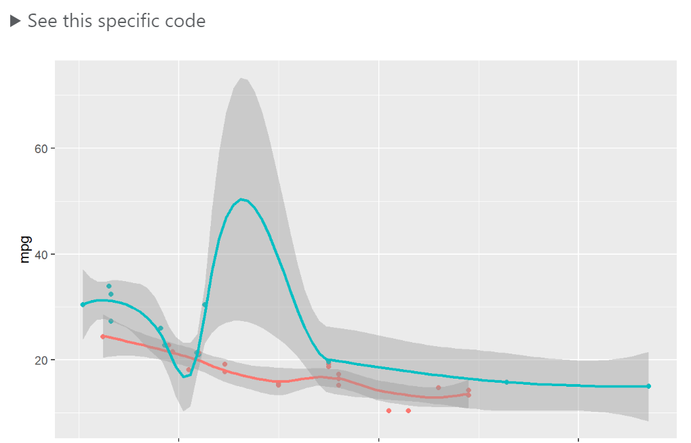
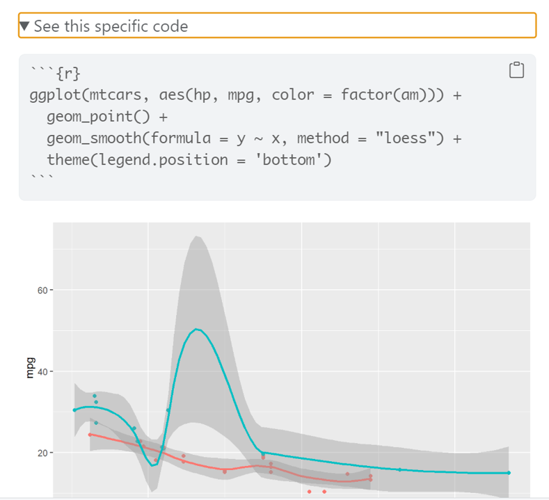
.png and .jpg@fig-peacock1 illustrates a peacock
```{r}
#| out-width: 50%
#| fig-align: center
#| fig-cap: A peacock living the life
#| fig-cap-location: bottom
#| label: fig-peacock1
knitr::include_graphics("img/peacock.png")
```Figure 1 illustrates a peacock
```{r}
#| out-width: 50%
#| fig-align: center
#| fig-cap: A peacock living the life
#| fig-cap-location: bottom
#| label: fig-peacock
knitr::include_graphics("img/peacock.png")
```@fig-mtcars1 illustrates a plot
```{r}
#| out-width: 50%
#| fig-align: center
#| fig-cap: A graph from `mtcars`
#| fig-cap-location: margin
#| label: fig-mtcars1
ggplot(mtcars, aes(hp, mpg, color = factor(am))) +
geom_point() +
geom_smooth(formula = y ~ x, method = "loess") +
theme(legend.position = 'bottom')
```Figure 2 illustrates a plot
```{r}
#| out-width: 50%
#| fig-align: center
#| fig-cap: A graph from `mtcars`
#| fig-cap-location: margin
#| label: fig-mtcars
#| code-line-numbers: "|2|3|4|5|6"
ggplot(mtcars,
aes(hp, mpg, color = factor(am))) +
geom_point() +
geom_smooth(formula = y ~ x, method = "loess") +
theme(legend.position = 'bottom')
```mtcars
From the previous document
Add an external image with knitr::include_graphics(), with a caption and a cross reference
From the dataset of the course, the following plot, with a cross-reference and a caption:
ggplot(dataset,
aes(x = flexibility, y = anxiety, color = mindfulness)) +
geom_point()kable# knitr default
kable(head(mtcars))kable() function is in the knitr package
| mpg | cyl | disp | hp | drat | wt | qsec | vs | am | gear | carb | |
|---|---|---|---|---|---|---|---|---|---|---|---|
| Mazda RX4 | 21.0 | 6 | 160 | 110 | 3.90 | 2.620 | 16.46 | 0 | 1 | 4 | 4 |
| Mazda RX4 Wag | 21.0 | 6 | 160 | 110 | 3.90 | 2.875 | 17.02 | 0 | 1 | 4 | 4 |
| Datsun 710 | 22.8 | 4 | 108 | 93 | 3.85 | 2.320 | 18.61 | 1 | 1 | 4 | 1 |
| Hornet 4 Drive | 21.4 | 6 | 258 | 110 | 3.08 | 3.215 | 19.44 | 1 | 0 | 3 | 1 |
| Hornet Sportabout | 18.7 | 8 | 360 | 175 | 3.15 | 3.440 | 17.02 | 0 | 0 | 3 | 2 |
| Valiant | 18.1 | 6 | 225 | 105 | 2.76 | 3.460 | 20.22 | 1 | 0 | 3 | 1 |
# kableExtra
# install.packages("kableExtra")
library(kableExtra)
kable(mtcars) %>%
scroll_box(height = "450px", width = "100%")| mpg | cyl | disp | hp | drat | wt | qsec | vs | am | gear | carb | |
|---|---|---|---|---|---|---|---|---|---|---|---|
| Mazda RX4 | 21.0 | 6 | 160.0 | 110 | 3.90 | 2.620 | 16.46 | 0 | 1 | 4 | 4 |
| Mazda RX4 Wag | 21.0 | 6 | 160.0 | 110 | 3.90 | 2.875 | 17.02 | 0 | 1 | 4 | 4 |
| Datsun 710 | 22.8 | 4 | 108.0 | 93 | 3.85 | 2.320 | 18.61 | 1 | 1 | 4 | 1 |
| Hornet 4 Drive | 21.4 | 6 | 258.0 | 110 | 3.08 | 3.215 | 19.44 | 1 | 0 | 3 | 1 |
| Hornet Sportabout | 18.7 | 8 | 360.0 | 175 | 3.15 | 3.440 | 17.02 | 0 | 0 | 3 | 2 |
| Valiant | 18.1 | 6 | 225.0 | 105 | 2.76 | 3.460 | 20.22 | 1 | 0 | 3 | 1 |
| Duster 360 | 14.3 | 8 | 360.0 | 245 | 3.21 | 3.570 | 15.84 | 0 | 0 | 3 | 4 |
| Merc 240D | 24.4 | 4 | 146.7 | 62 | 3.69 | 3.190 | 20.00 | 1 | 0 | 4 | 2 |
| Merc 230 | 22.8 | 4 | 140.8 | 95 | 3.92 | 3.150 | 22.90 | 1 | 0 | 4 | 2 |
| Merc 280 | 19.2 | 6 | 167.6 | 123 | 3.92 | 3.440 | 18.30 | 1 | 0 | 4 | 4 |
| Merc 280C | 17.8 | 6 | 167.6 | 123 | 3.92 | 3.440 | 18.90 | 1 | 0 | 4 | 4 |
| Merc 450SE | 16.4 | 8 | 275.8 | 180 | 3.07 | 4.070 | 17.40 | 0 | 0 | 3 | 3 |
| Merc 450SL | 17.3 | 8 | 275.8 | 180 | 3.07 | 3.730 | 17.60 | 0 | 0 | 3 | 3 |
| Merc 450SLC | 15.2 | 8 | 275.8 | 180 | 3.07 | 3.780 | 18.00 | 0 | 0 | 3 | 3 |
| Cadillac Fleetwood | 10.4 | 8 | 472.0 | 205 | 2.93 | 5.250 | 17.98 | 0 | 0 | 3 | 4 |
| Lincoln Continental | 10.4 | 8 | 460.0 | 215 | 3.00 | 5.424 | 17.82 | 0 | 0 | 3 | 4 |
| Chrysler Imperial | 14.7 | 8 | 440.0 | 230 | 3.23 | 5.345 | 17.42 | 0 | 0 | 3 | 4 |
| Fiat 128 | 32.4 | 4 | 78.7 | 66 | 4.08 | 2.200 | 19.47 | 1 | 1 | 4 | 1 |
| Honda Civic | 30.4 | 4 | 75.7 | 52 | 4.93 | 1.615 | 18.52 | 1 | 1 | 4 | 2 |
| Toyota Corolla | 33.9 | 4 | 71.1 | 65 | 4.22 | 1.835 | 19.90 | 1 | 1 | 4 | 1 |
| Toyota Corona | 21.5 | 4 | 120.1 | 97 | 3.70 | 2.465 | 20.01 | 1 | 0 | 3 | 1 |
| Dodge Challenger | 15.5 | 8 | 318.0 | 150 | 2.76 | 3.520 | 16.87 | 0 | 0 | 3 | 2 |
| AMC Javelin | 15.2 | 8 | 304.0 | 150 | 3.15 | 3.435 | 17.30 | 0 | 0 | 3 | 2 |
| Camaro Z28 | 13.3 | 8 | 350.0 | 245 | 3.73 | 3.840 | 15.41 | 0 | 0 | 3 | 4 |
| Pontiac Firebird | 19.2 | 8 | 400.0 | 175 | 3.08 | 3.845 | 17.05 | 0 | 0 | 3 | 2 |
| Fiat X1-9 | 27.3 | 4 | 79.0 | 66 | 4.08 | 1.935 | 18.90 | 1 | 1 | 4 | 1 |
| Porsche 914-2 | 26.0 | 4 | 120.3 | 91 | 4.43 | 2.140 | 16.70 | 0 | 1 | 5 | 2 |
| Lotus Europa | 30.4 | 4 | 95.1 | 113 | 3.77 | 1.513 | 16.90 | 1 | 1 | 5 | 2 |
| Ford Pantera L | 15.8 | 8 | 351.0 | 264 | 4.22 | 3.170 | 14.50 | 0 | 1 | 5 | 4 |
| Ferrari Dino | 19.7 | 6 | 145.0 | 175 | 3.62 | 2.770 | 15.50 | 0 | 1 | 5 | 6 |
| Maserati Bora | 15.0 | 8 | 301.0 | 335 | 3.54 | 3.570 | 14.60 | 0 | 1 | 5 | 8 |
| Volvo 142E | 21.4 | 4 | 121.0 | 109 | 4.11 | 2.780 | 18.60 | 1 | 1 | 4 | 2 |
# DT
# install.packages("DT")
library(DT)
datatable(mtcars)At this page https://quarto.org/docs/authoring/cross-references.html you can find all the details and help for a correct use of cross-referencing.
. . .
@obj-label. . .
YAML:
[...]
lang: en| Language | Code |
|---|---|
| English | en |
| Chinese | zh |
| Spanish | es |
| French | fr |
| Japanese | ja |
| German | de |
| Language | Code |
|---|---|
| Portuguese | pt |
| Russian | ru |
| Czech | cs |
| Finnish | fi |
| Dutch | nl |
| Italian | it |
| Polish | pl |
| Korean | ko |
@fig-pea illustrates a peacock
```{r}
#| out-width: 50%
#| fig-align: center
#| fig-cap: A peacock living the life
#| fig-cap-location: bottom
#| label: fig-pea
#| code-line-numbers: "|4-6|"
knitr::include_graphics("img/peacock.png")
```Figure 3 illustrates a peacock
@tbl-iris illustrates a table
```{r}
#| echo: fenced
#| label: tbl-iris
#| tbl-cap: "Iris Data"
#| code-line-numbers: "|2|3|"
kable(head(iris))
```Table 1 illustrates a table
| Sepal.Length | Sepal.Width | Petal.Length | Petal.Width | Species |
|---|---|---|---|---|
| 5.1 | 3.5 | 1.4 | 0.2 | setosa |
| 4.9 | 3.0 | 1.4 | 0.2 | setosa |
| 4.7 | 3.2 | 1.3 | 0.2 | setosa |
| 4.6 | 3.1 | 1.5 | 0.2 | setosa |
| 5.0 | 3.6 | 1.4 | 0.2 | setosa |
| 5.4 | 3.9 | 1.7 | 0.4 | setosa |
```{r}
#| lst-label: lst-basicPlot
#| lst-cap: Basic use of the plot() function
plot(cars)
```@lst-basicPlot illustrates a basic use of the function plot()
plot(cars)Listing 1 illustrates a basic use of the function plot()
@eq-standardize illustrates how to standardize a value
$$
z = \frac{x_i - \bar{x}}{s}
$$ {#eq-standardize}Equation 1 illustrates how to standardize a value
\[ z = \frac{x_i - \bar{x}}{s} \tag{1}\]
ggplot graph:
::: {.column-margin}
I want this picture displayed in the margin

:::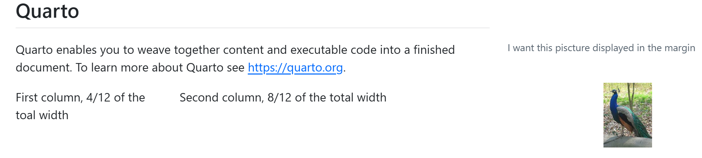
```{r}
#| column: margin
lm(hp ~ mpg*am, data = mtcars)
```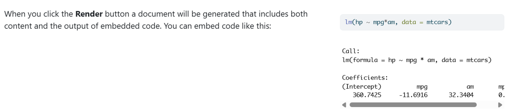
```{r}
#| column: margin
ggplot(mtcars,
aes(hp, mpg, color = factor(am))) +
geom_point() +
geom_smooth(formula = y ~ x, method = "loess") +
theme(legend.position = 'bottom')
```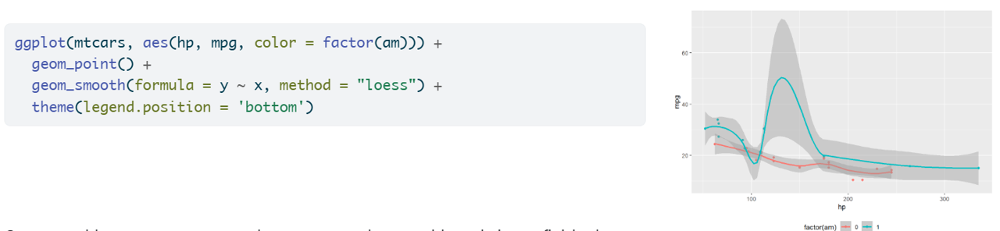
```{r}
#| column: margin
datatable(mtcars,
options = list(pageLength = 5))
```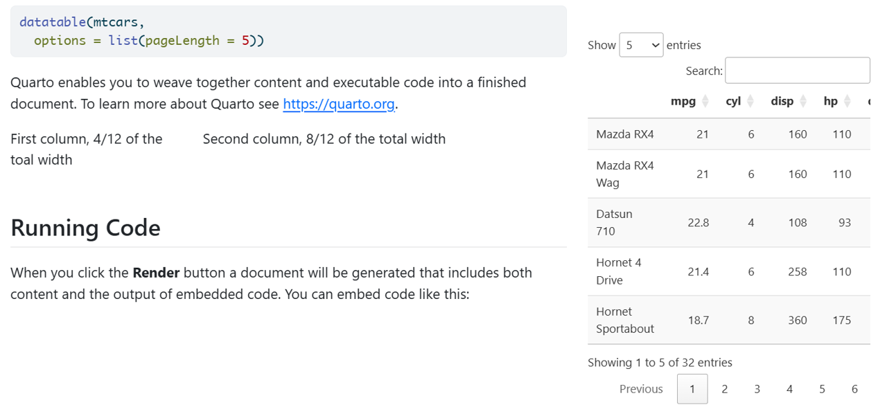
```{r}
#| eval: false
#| fig-column: margin
ggplot(mtcars,
aes(hp, mpg, color = factor(am))) +
geom_point() +
geom_smooth(formula = y ~ x, method = "loess") +
theme(legend.position = 'bottom')
datatable(mtcars,
options = list(pageLength = 5))
```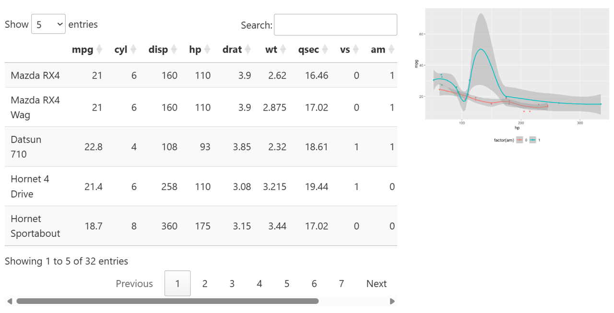
@fig-plotsModels illustrates different things. @fig-plotsModels-1 illustrates this, @fig-plotsModels-2 illustrates that and so on
```{r}
#| label: fig-plotsModels
#| column: screen-inset-shaded
#| layout-nrow: 2
#| layout-ncol: 2
#| fig-cap: "One dataset, different models"
#| fig-subcap:
#| - "The data"
#| - "Polynomial"
#| - "Linear Model"
#| - "GLM with Poisson"
ggplot(mtcars,
aes(mpg, hp, size = gear)) +
geom_point()
ggplot(mtcars,
aes(mpg, hp, size = gear)) +
geom_point() +
geom_smooth()
ggplot(mtcars,
aes(mpg, hp, size = gear)) +
geom_point() +
geom_smooth(method = "lm")
ggplot(mtcars,
aes(mpg, hp, size = gear)) +
geom_point() +
geom_smooth(method = "glm", method.args = list(family = "poisson"))
```Figure 4 illustrates different things. Figure 4 (a) illustrates this, Figure 4 (b) illustrates that and so on
@tbl-tables presents two datasets: @tbl-tables-1 is cars and @tbl-tables-2 is pressure
```{r}
#| label: tbl-tables
#| tbl-cap: "Datasets"
#| tbl-subcap:
#| - "Cars"
#| - "Pressure"
#| layout-ncol: 2
kable(head(cars))
kable(head(pressure))
```Table 2 presents two datasets: Table 2 (a) is cars and Table 2 (b) is pressure
| speed | dist |
|---|---|
| 4 | 2 |
| 4 | 10 |
| 7 | 4 |
| 7 | 22 |
| 8 | 16 |
| 9 | 10 |
| temperature | pressure |
|---|---|
| 0 | 0.0002 |
| 20 | 0.0012 |
| 40 | 0.0060 |
| 60 | 0.0300 |
| 80 | 0.0900 |
| 100 | 0.2700 |
+ geom_smooth() to the previous code)YAML:
[...]
code-annotations: hover. . .
Options:
below: The annotation appears below the code
hover: The annotation appears when the mouse hovers over the annotation marker
select: The annotation appears when the annotation marker is clicked
Remove the dot between this symbol # and this symbol <
## GGplot
mtcars %>% # .<1>
ggplot( aes(mpg, hp, size = gear)) + # .<2>
geom_point() + # .<3>
geom_smooth(method = "lm") # .<4>1. This does that
2. This other thing is this
3. And look at this!
4. Please have mercy
## GGplot
mtcars %>%
ggplot( aes(mpg, hp, size = gear)) +
geom_point() +
geom_smooth(method = "lm")
This allows for showing and executing code chunks directly in the text:
The mean of the gear variable in mtcars is `r mean(mtcars$gear)`. . .
The mean of the gear variable in mtcars is 3.6875
. . .
If you want the display of the code but not its execution:
This is the code to compute the mean `mean(mtcars$gear)`. . .
This is the code to compute the mean mean(mtcars$gear)